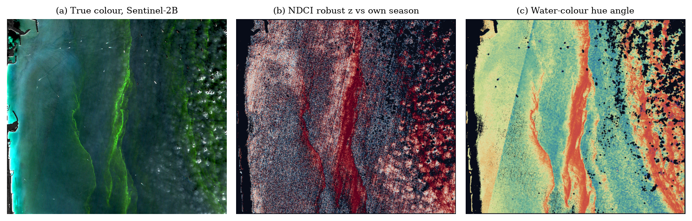
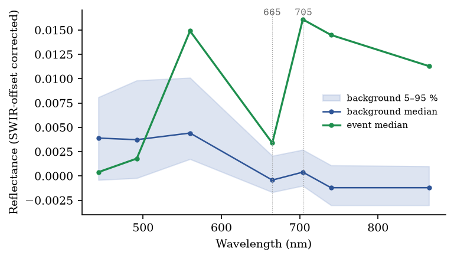
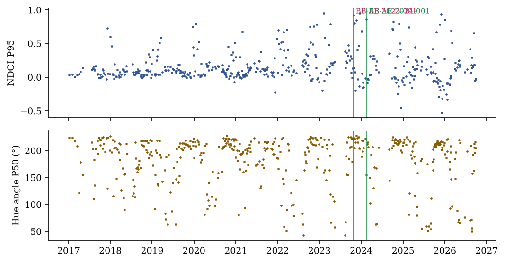
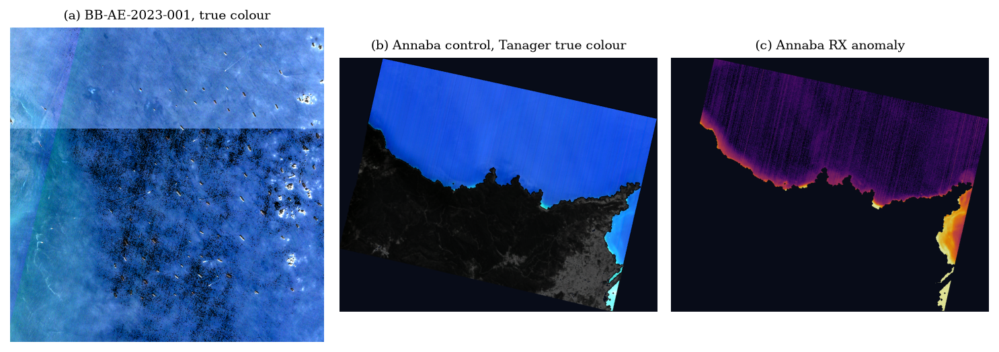
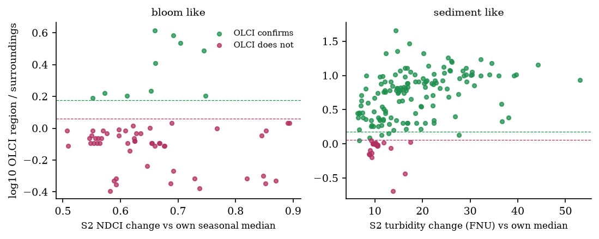
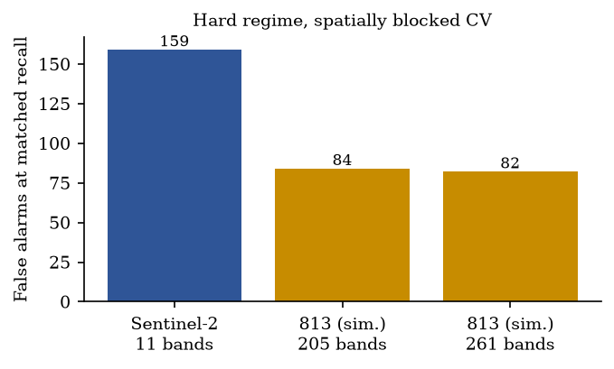

BLUEBAN 813: verification-first coastal incident intelligence for the UAE
1 Introduction
The UAE draws most of its drinking water from desalination plants on two very different seas: the shallow, hypersaline Arabian Gulf with a bright seabed, and the deep Gulf of Oman, where blooms have become more frequent and cluster between November and April [1]. The 2008–2009 Margalefidinium (Cochlodinium) bloom closed desalination plants and killed fish along both coasts [2], and green Noctiluca scintillans now dominates many winter blooms in the Gulf of Oman and Arabian Sea [3]. Satellite ocean colour sees these events, but three problems keep it from being operational: optically shallow water and bright coastlines flood spatial anomaly detectors with persistent false alarms [4]; standard chlorophyll products are biased in these waters [5]; and a map does not decide anything — someone has to review it, sample the water and feed the answer back.
BLUEBAN 813 addresses the third problem first. Its contributions are: (i) a per-pixel seasonal anomaly detector over the full Sentinel-2 archive that makes persistence explicit; (ii) a cross-sensor reference built from same-morning Sentinel-3 OLCI Case-2 retrievals, used as weak labels and as incident evidence but never as ground truth; (iii) an incident model with a state machine, verification queue, field workflow and alerts; (iv) a governed learning loop with a frozen validation set, a promotion gate and human approval; and (v) a measured, rather than assumed, estimate of what an aquatic hyperspectral sensor such as Satellite 813 would add.
2 Data
Sentinel-2 MSI Level-2A surface reflectance (Sen2Cor) from the Microsoft Planetary Computer is the primary sensor. The reflectance offset (BOA_ADD_OFFSET = −1000) is applied according to each tile's processing baseline (≥ 04.00), not its acquisition date, before datatakes spanning UTM zones 39 and 40 are mosaicked. Sentinel-3 OLCI WFR Level-2 (CHL_NN, TSM_NN, WQSF flags) provides the cross-sensor reference; the Planetary Computer archive ends on 23 February 2026. Planet Tanager-1 hyperspectral data (CC-BY-4.0) over the Gulf of Annaba supply the source spectra for the simulated 813 product. ERA5 10 m winds drive a wind-only drift scenario; OpenStreetMap provides 120 UAE coastal assets (desalination and power plants, ports, beaches); Environment Agency Abu Dhabi publishes monitoring-station locations but no measurements.
An audit of the hackathon platform and the gIQ portal (30 September 2026) found no accessible Satellite 813 product and no downloadable in-situ data; public searches found no per-sample UAE chlorophyll, turbidity or TSS measurements. These two facts shape everything below: 813 appears only as a labelled simulation, and all water-quality quantities are reported as proxies.
3 Methods
3.1 Water mask and features
Pixels are rejected when the scene classification flags no data, saturation, cloud shadow, medium or high cloud probability, cirrus or snow. Water requires MNDWI > 0 and B11 < 0.10; pixels with B11 > 0.0215 are kept but flagged as glint-affected and corrected by subtracting B12 from every band, a first-order surface correction. Features follow their published definitions: NDCI = (R705 − R665)/(R705 + R665) [6]; MCI, the height of R705 above the R665–R740 baseline [7]; FAI [8]; turbidity from the Nechad et al. single-band algorithm with its generic coefficients [9]; and the water-colour hue angle [10].
3.2 Per-pixel seasonal anomaly (DETECT)
For acquisition t and feature F, each pixel is compared with its own values on acquisitions within ±45 days of the same day of year in other years:
z(p) = (F_t(p) − median(clim(p))) / (1.4826 · MAD(clim(p)) + floor_F)A candidate is a connected region of at least 0.5 km² with z ≥ 3 and seasonal percentile ≥ 95 on the hypothesis' primary feature (NDCI for bloom-like, turbidity for sediment-like, FAI for surface material), with a secondary feature in agreement (MCI z ≥ 1 for bloom-like). A zone screen on the AOI's P95/P99 seasonal percentile selects 2,489 of 5,105 acquisitions for the pixel-level pass. Each candidate carries thirteen triage features, including its persistence (the share of past same-season dates showing a similar signal) and its water-colour change relative to the pixel's seasonal median.
3.3 Cross-sensor reference
For every bloom-like or sediment-like candidate up to 23 February 2026, the OLCI granule from the same morning is read in a window around the AOI, its pixels are mapped onto the candidate, and the Case-2 neural-network product (CHL_NN or TSM_NN) inside the region is compared with the surrounding water. The region is a reference positive when its median is ≥ 1.5 × the surroundings (and ≥ 2 units) or ≥ 10 units outright, a reference negative when the ratio is ≤ 1.15 and the median < 5 units, and unlabelled otherwise. These labels carry weight 0.5 (analyst 1.0, field 2.0). For incidents the comparison uses footprint matching: an OLCI pixel belongs to the event when its 300 m footprint overlaps it.
3.4 Incidents, verification and learning
An incident moves through DETECTED → UNDER_REVIEW → FIELD_VALIDATION_REQUIRED → CONFIRMED / FALSE_POSITIVE / RESOLVED. Analyst decisions CONFIRM, FALSE_POSITIVE and RECLASSIFY create labels; NEEDS_FIELD_SAMPLE and INSUFFICIENT_EVIDENCE do not. Labels are split into train and a frozen validation set by whole AOI-month groups, taken in a deterministic hash order until about 20 % of each class is held out (a stratified grouped split), so near-duplicate scenes never straddle the split. A candidate L2 logistic model (identical in Python and in the browser to 10⁻⁷) is promoted only if the model tests pass, the validation hash is unchanged, both classes are present, AUPRC is not worse than production (grouped bootstrap), calibration is acceptable, no AOI regresses, and a named human approves. Every action is recorded in a SHA-256 hash-chained audit log.
3.5 Simulating Satellite 813
The published 813 configuration (≈205 bands, 400–1700 nm) is simulated by Gaussian spectral-response convolution of real Tanager-1 spectra (368 good bands, 5 nm sampling). The simulator was checked against a real Sentinel-2 scene acquired 38 minutes from the Tanager scene. The ablation trains the same classifier on the same pixels convolved to each band set, with spatially blocked cross-validation (173 blocks), so spectral configuration is the only variable. Reference labels are a full-spectrum RX judgement, not in-situ truth.
4 Results
4.1 Archive screening
5,080 of 5,080 Sentinel-2 datatakes were read over 10 UAE AOIs. DETECT produced 3,061 candidates (554 bloom like, 2,429 sediment like, 78 surface film like). The cross-sensor reference labelled 436 of them (323 confirmed, 113 not confirmed); most others were smaller than a few OLCI pixels or had no clear OLCI granule.
| AOI | Datatakes | Usable | Glint-flagged water (median) | Candidates | OLCI refs (+/−) |
|---|---|---|---|---|---|
| AE-AUH-LAGOON | 755 | 666 | 71 % | 282 | 10/0 |
| AE-AUH-NORTH | 655 | 597 | 40 % | 681 | 41/19 |
| AE-AUH-TAWEELAH | 656 | 570 | 51 % | 676 | 74/16 |
| AE-DXB-JEBELALI | 739 | 551 | 40 % | 391 | 46/12 |
| AE-FUJ-DIBBA | 333 | 278 | 95 % | 57 | 12/7 |
| AE-FUJ | 563 | 456 | 49 % | 257 | 11/20 |
| AE-SHJ-AJM | 380 | 334 | 85 % | 215 | 52/11 |
| AE-SHJ-KALBA | 298 | 241 | 20 % | 57 | 11/3 |
| AE-SHJ-KHORFAKKAN | 355 | 263 | 62 % | 75 | 5/10 |
| AE-UAQ-RAK | 346 | 343 | 76 % | 370 | 61/15 |
4.2 Fujairah, 17 February 2024

The event covers 2.39 km² at 20 m. Its median NDCI is 0.68 against a seasonal median of -0.003 (robust z 7.3, 100th seasonal percentile), MCI is 0.0068 against 0.0007, and the same location showed a similar signal on only 4 % of past same-season dates. Sentinel-3B OLCI, 30 minutes earlier, gives a CHL_NN median of 13.1 mg m⁻³ over the 34 OLCI pixels overlapping the event against 3.2 mg m⁻³ around it. The spectrum (Fig. 2) shows the red-edge excess at 705 nm expected of dense phytoplankton. The timing matches the winter Noctiluca season, and NASA's PACE imaged a likely-Noctiluca bloom in the Gulf of Oman a month later [11]; neither confirms the species of this event. The incident is therefore raised as a bloom-like optical anomaly for analyst review, with a five-point sampling plan (core, edge, background control, uncertainty) and exposure to the nearest ports and the Fujairah and Kalba power and desalination plants.


4.3 A failure mode: 25 October 2023
BB-AE-2023-001 has an equally high NDCI z (6.8) but its hue angle (221°) is unchanged from the usual 213°, turbidity is at its 3th seasonal percentile, and same-morning OLCI saw 3.8 vs 3.4 mg m⁻³ (×1.11). Over very clear water the corrected red reflectance approaches zero and NDCI, a ratio, becomes unstable. The system raises it (the rule baseline cannot tell), the cross-sensor reference labels such cases negative, and an analyst rejection adds a full-weight label: this is precisely the error a learned triage model should absorb.

4.4 Agreement between Sentinel-2 and OLCI
Across referenced candidates, the size of the Sentinel-2 change and the OLCI contrast are related (bloom-like: Spearman ρ = -0.19, n = 83; sediment-like: ρ = 0.46, n = 353; median |Δt| 24 min). Figure 5 shows the separation the reference provides.

4.5 Triage model on the frozen validation set
With 336 training and 100 validation labels (75 positive), the rule baseline and an offline logistic candidate score as follows. The validation set is small; the confidence intervals, not the point estimates, are the result.
| Metric | Rule baseline (production) | Logistic candidate | Δ, grouped bootstrap 95 % CI |
|---|---|---|---|
| AUPRC | 0.658 | 0.936 | [0.039, 0.476] |
| AUROC | 0.353 | 0.793 | [0.065, 0.944] |
| F1 (0.5) | 0.857 | 0.787 | |
| Precision | 0.750 | 0.787 | |
| Recall | 1.000 | 0.787 | |
| Brier | 0.222 | 0.156 | |
| ECE | 0.232 | 0.162 |
Leave-one-AOI-out (AUPRC, candidate vs rule):
| Held-out AOI | n (positive) | Candidate | Rule |
|---|---|---|---|
| AE-AUH-LAGOON | 10 (10) | n/a | n/a |
| AE-AUH-NORTH | 60 (41) | 0.982 | 0.497 |
| AE-AUH-TAWEELAH | 90 (74) | 0.998 | 0.669 |
| AE-DXB-JEBELALI | 58 (46) | 0.992 | 0.618 |
| AE-FUJ | 31 (11) | 0.563 | 0.340 |
| AE-FUJ-DIBBA | 19 (12) | 0.937 | 0.860 |
| AE-SHJ-AJM | 63 (52) | 0.935 | 0.729 |
| AE-SHJ-KALBA | 14 (11) | 0.925 | 0.755 |
| AE-SHJ-KHORFAKKAN | 15 (5) | 1.000 | 0.221 |
| AE-UAQ-RAK | 76 (61) | 0.897 | 0.835 |
4.6 What does 813 add?

At the operational decision boundary the simulated 813 band set reduced false alarms from 159 to 84 (F1 0.985 → 0.992), while for a gross plume both band sets saturate (F1 1.000 vs 1.000). Regressions against OLCI products were not skilful for either (CHL_NN R² 0.08 and 0.01; 658 matchups 25.5 h apart). The measured value of hyperspectral sampling is therefore discrimination near the decision boundary, not detection of obvious events and not, on this evidence, concentration.
5 Discussion and limitations
Sen2Cor is a land processor, and the SWIR offset removes only first-order glint; water-specific atmospheric correction would reduce the NDCI instability seen in §4.3. OLCI CHL_NN and TSM_NN are model products with their own errors, worst in optically shallow Gulf water; they are used as weak references and every label records the OLCI values it came from. The references under-represent events smaller than a few 300 m pixels and cannot exist after February 2026. The per-pixel climatology needs several years of same-season scenes and is weaker for the earliest dates. No physical concentration is reported: the matchup engine (±24 h, 3×3 box, CV ≤ 0.15, sensitivity at 3 h and 72 h) and a calibration gate (≥ 20 matchups in ≥ 5 groups, grouped-CV R² ≥ 0.4 in log space with a confidence interval above zero) are ready for the first legitimate samples. The drift is a wind-only scenario and no source is ever inferred from it. The 813 results are simulations on an Algerian scene until real 813 data and a UAE Tanager scene are available.
6 Conclusion
Treating detections as incidents — compared with their own history, cross-checked by an independent sensor, decided by analysts, confirmed in the field and fed back through a gated learning loop — turns satellite water-quality monitoring into something an operator can act on without being flooded by the coastline. On real UAE data the approach surfaced a visible, cross-sensor-supported bloom-like event off Fujairah and exposed, rather than hid, a characteristic false positive. BlueBan turns every coastal incident into both a response and a lesson.
Data and code availability
All code, derived outputs and this paper's generator are at github.com/4waiz/BlueBan-813; every figure and number here is rebuilt from the repository's outputs by scripts/build_paper.py. Input data are public (Copernicus, Planet Tanager open data, ERA5, OpenStreetMap). No restricted data are included.
References
- Al-Shehhi, M. R., Nelson, D., Farzanah, R., Alshihi, R., Salehi-Ashtiani, K. (2021). Characterizing algal blooms in a shallow & a deep channel. Ocean & Coastal Management 213, 105840.
- Richlen, M. L. et al. (2010). The catastrophic 2008–2009 red tide in the Arabian Gulf region, with observations on the identification and phylogeny of the fish-killing dinoflagellate Cochlodinium polykrikoides. Harmful Algae 9, 163–172.
- Gomes, H. R. et al. (2014). Massive outbreaks of Noctiluca scintillans blooms in the Arabian Sea due to spread of hypoxia. Nature Communications 5, 4862.
- Al Shehhi, M. R., Gherboudj, I., Ghedira, H. (2017). In situ spectral response of the Arabian Gulf and Sea of Oman coastal waters to bio-optical properties. J. Photochem. Photobiol. B 175, 235–243.
- Warren, M. A. et al. (2019). Assessment of atmospheric correction algorithms for the Sentinel-2A MultiSpectral Imager over coastal and inland waters. Remote Sensing of Environment 225, 267–289.
- Mishra, S., Mishra, D. R. (2012). Normalized difference chlorophyll index. Remote Sensing of Environment 117, 394–406.
- Gower, J., King, S., Borstad, G., Brown, L. (2005). Detection of intense plankton blooms using the 709 nm band of the MERIS imaging spectrometer. Int. J. Remote Sensing 26, 2005–2012.
- Hu, C. (2009). A novel ocean color index to detect floating algae in the global oceans. Remote Sensing of Environment 113, 2118–2129.
- Nechad, B., Ruddick, K. G., Park, Y. (2010). Calibration and validation of a generic multisensor algorithm for mapping of total suspended matter in turbid waters. Remote Sensing of Environment 114, 854–866.
- van der Woerd, H. J., Wernand, M. R. (2015). True colour classification of natural waters with medium-spectral resolution satellites. Sensors 15, 25663–25680.
- NASA Earth Observatory (2024). Complex Beauty in the Gulf of Oman (PACE OCI, 17 March 2024).
- Doerffer, R., Schiller, H. (2007). The MERIS Case 2 water algorithm. Int. J. Remote Sensing 28, 517–535.
- Gernez, P., Zoffoli, M. L., Lacour, T., Hernández Fariñas, T., Navarro, G., Caballero, I., Harmel, T. (2023). The many shades of red tides: Sentinel-2 optical types of highly-concentrated harmful algal blooms. Remote Sensing of Environment 287, 113486.